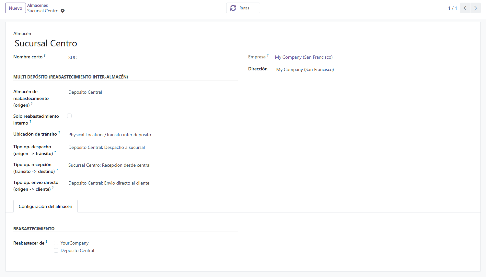
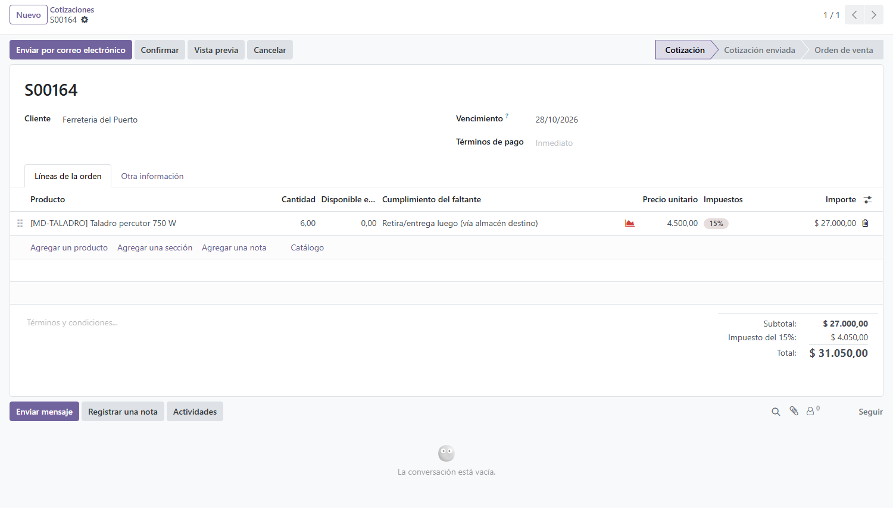
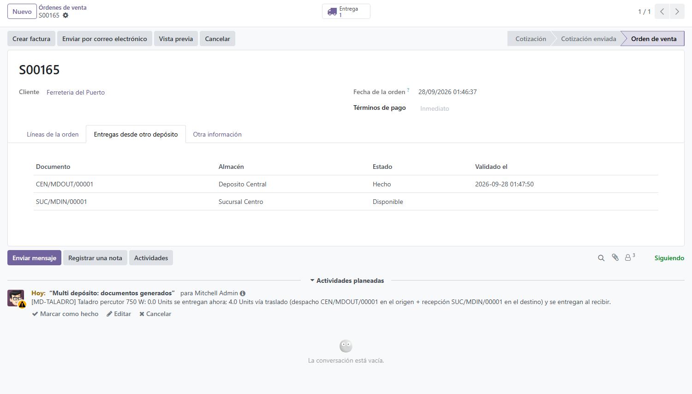

<section class="oe_container">
  <div class="oe_row oe_spaced" style="max-width:840px;margin:0 auto;padding:24px;font-family:Poppins,Arial,Helvetica,sans-serif">
    <div style="border-left:6px solid #0FA656;padding-left:18px;margin-bottom:18px">
      <h1 style="color:#1A252C;margin:0 0 6px;font-size:29px">Sell at one branch the stock that sits in another</h1>
      <p style="color:#555;font-size:17px;margin:0;line-height:1.45">The customer buys at the branch even when the goods are in another warehouse: the system builds the internal transfer, or the direct delivery from the source warehouse to the customer.</p>
    </div>
    <p style="margin:0 0 20px;color:#333;line-height:1.6;font-size:15px">In a company with several branches or warehouses, the sale cannot depend on where the goods physically are. This module lets you <b>sell at one branch the stock located in another warehouse</b> and resolves the movement two ways: an internal transfer through a transit location with double validation, or a direct delivery from the source warehouse (usually the central one) to the customer.</p>
<h2 style="color:#1A252C;font-size:21px;margin:26px 0 10px">What it does</h2>
<ul style="color:#333;line-height:1.7;font-size:15px;margin:0;padding-left:22px">
<li><b>Inter-branch sales:</b> the order is taken at the branch and the stock leaves the warehouse that actually holds it.</li>
<li><b>Internal transfer with a transit stage and double validation:</b> dispatch confirmed at the source and receipt confirmed at the destination, with no stock vanishing on the way.</li>
<li><b>Direct delivery (internal drop-ship):</b> the source warehouse delivers straight to the customer, without going through the branch that sold.</li>
<li><b>Available and missing quantity on the sale line:</b> the salesperson sees how much there is in the warehouse of the sale and, if something is missing, has to choose how to fulfil it before confirming.</li>
<li><b>The source documents are visible on the order,</b> even when the source warehouse belongs to another company and the multi-company rule would hide them: the counter sees that the goods went out.</li>
<li><b>No second remittance for a sale already dispatched:</b> if the order is cancelled, set back to draft and confirmed again, the module refuses to emit a second transfer or drop-ship for goods that already left.</li>
<li><b>Cascading cancellation:</b> cancelling the sale cancels the pending transfers and direct deliveries it had generated; the validated ones are left for manual handling.</li>
</ul>
<h2 style="color:#1A252C;font-size:21px;margin:26px 0 10px">The module on screen</h2>

<p style="margin:0 0 16px;color:#777;font-size:13px;line-height:1.45">Multi-warehouse mapping on the warehouse / Mapeo multi dep&#243;sito en el almac&#233;n</p>

<p style="margin:0 0 16px;color:#777;font-size:13px;line-height:1.45">Sale line with the local availability and the fulfilment selector / L&#237;nea de venta con lo disponible local y el selector de cumplimiento</p>

<p style="margin:0 0 20px;color:#777;font-size:13px;line-height:1.45">Documents generated by the source warehouse, on the order / Documentos generados por el dep&#243;sito de origen, en el pedido</p>
<h2 style="color:#1A252C;font-size:21px;margin:26px 0 10px">Who it is for</h2>
<ul style="color:#333;line-height:1.7;font-size:15px;margin:0;padding-left:22px">
<li><b>Branch networks</b> with a central warehouse that supplies the shops and also delivers to customers.</li>
<li><b>Importers and distributors</b> selling from several points against one and the same stock.</li>
<li>Companies where inter-branch sales are resolved today <b>by phone and a hand-written remittance</b>.</li>
</ul>
<h2 style="color:#1A252C;font-size:21px;margin:26px 0 10px">How it works</h2>
<ol style="color:#333;line-height:1.7;font-size:15px;margin:0;padding-left:22px">
<li>On the warehouse of the branch, set its source warehouse, the transit location and the operation types to use.</li>
<li>Take the sale order at the branch: every line shows what is available in that warehouse and how much is missing.</li>
<li>Choose the path for the shortage: internal transfer to the branch, direct delivery from the source warehouse to the customer, or deliver only what is there.</li>
<li>The system generates the corresponding moves; the transfer goes through transit, validated at the source and at the destination.</li>
<li>If the sale is cancelled, the moves it generated that are still pending are cancelled along with it.</li>
</ol>
<h2 style="color:#1A252C;font-size:21px;margin:26px 0 10px">Frequently asked questions</h2>
<p style="margin:0 0 4px;color:#1A252C;font-size:15px"><b>What happens to the stock while it travels between warehouses?</b></p><p style="margin:0 0 12px;color:#333;line-height:1.6;font-size:15px">It sits in a transit location: it left the source but it has not entered the destination yet, and both ends have to validate.</p>
<p style="margin:0 0 4px;color:#1A252C;font-size:15px"><b>Can the source warehouse deliver straight to the customer?</b></p><p style="margin:0 0 12px;color:#333;line-height:1.6;font-size:15px">Yes, that is the second path: a direct delivery that does not go through the branch that sold.</p>
<p style="margin:0 0 4px;color:#1A252C;font-size:15px"><b>Does it work when the source warehouse is another company?</b></p><p style="margin:0 0 12px;color:#333;line-height:1.6;font-size:15px">Yes. The documents are created in the company of the source, and the order shows them to the salesperson of the destination as read-only data, without opening up any other document of that company.</p>
<p style="margin:0 0 4px;color:#1A252C;font-size:15px"><b>What do I need to install it?</b></p><p style="margin:0 0 12px;color:#333;line-height:1.6;font-size:15px">Only the standard Odoo Sales and Inventory modules.</p>
<hr style="border:none;border-top:1px solid #DDE4E7;margin:26px 0"/>
<h2 style="color:#1A252C;font-size:23px;margin:0 0 6px">Venda en una sucursal el stock que est&#225; en otra</h2>
<p style="color:#555;font-size:16px;margin:0 0 16px;line-height:1.45">El cliente compra en la sucursal aunque la mercader&#237;a est&#233; en otro dep&#243;sito: el sistema arma el traslado interno o el env&#237;o directo desde el dep&#243;sito de origen al cliente.</p>
<p style="margin:0 0 20px;color:#333;line-height:1.6;font-size:15px">En una empresa con varias sucursales o dep&#243;sitos, la venta no puede depender de d&#243;nde est&#225; f&#237;sicamente la mercader&#237;a. Este m&#243;dulo permite <b>vender en una sucursal el stock ubicado en otro dep&#243;sito</b> y resuelve el movimiento con dos caminos: traslado interno con tr&#225;nsito y doble validaci&#243;n, o env&#237;o directo desde el dep&#243;sito de origen (t&#237;picamente el central) al cliente.</p>
<h3 style="color:#1A252C;font-size:19px;margin:22px 0 10px">Qu&#233; hace</h3>
<ul style="color:#333;line-height:1.7;font-size:15px;margin:0;padding-left:22px">
<li><b>Venta inter sucursal:</b> el pedido se hace en la sucursal y el stock sale del dep&#243;sito donde realmente est&#225;.</li>
<li><b>Traslado interno con etapa de tr&#225;nsito y doble validaci&#243;n:</b> salida confirmada en el dep&#243;sito de origen y recepci&#243;n confirmada en el destino, sin stock que desaparece en el camino.</li>
<li><b>Env&#237;o directo (drop-ship interno):</b> el dep&#243;sito de origen entrega directamente al cliente, sin pasar por la sucursal que vendi&#243;.</li>
<li><b>Disponible y faltante a la vista en la l&#237;nea de venta:</b> el vendedor ve cu&#225;nto hay en el almac&#233;n de la venta y, si falta, tiene que elegir c&#243;mo cumplir el faltante antes de confirmar.</li>
<li><b>Los documentos del origen se ven en el pedido,</b> aun cuando el dep&#243;sito de origen es de otra compa&#241;&#237;a y la regla multi-compa&#241;&#237;a los ocultar&#237;a: el mostrador sabe que la mercader&#237;a sali&#243;.</li>
<li><b>Sin segundo remito por una venta ya despachada:</b> si el pedido se cancela, se vuelve a borrador y se reconfirma, el m&#243;dulo no emite un segundo traslado ni un segundo env&#237;o directo por mercader&#237;a que ya sali&#243;.</li>
<li><b>Cancelaci&#243;n en cascada:</b> si se cancela la venta, se cancelan los traslados y env&#237;os directos pendientes que hab&#237;a generado; los ya validados quedan para gestionarlos a mano.</li>
</ul>
<h3 style="color:#1A252C;font-size:19px;margin:22px 0 10px">Para qui&#233;n es</h3>
<ul style="color:#333;line-height:1.7;font-size:15px;margin:0;padding-left:22px">
<li><b>Cadenas de sucursales</b> con un dep&#243;sito central que abastece los locales y entrega a clientes.</li>
<li><b>Importadoras y distribuidoras</b> que venden desde varios puntos contra un mismo stock.</li>
<li>Empresas donde hoy la venta entre sucursales se resuelve <b>por tel&#233;fono y remito manual</b>.</li>
</ul>
<h3 style="color:#1A252C;font-size:19px;margin:22px 0 10px">C&#243;mo funciona</h3>
<ol style="color:#333;line-height:1.7;font-size:15px;margin:0;padding-left:22px">
<li>Configure en el almac&#233;n de la sucursal cu&#225;l es su dep&#243;sito de origen, la ubicaci&#243;n de tr&#225;nsito y los tipos de operaci&#243;n a usar.</li>
<li>Cargue el pedido de venta en la sucursal: cada l&#237;nea muestra lo disponible en ese almac&#233;n y cu&#225;nto falta.</li>
<li>Elija el camino para el faltante: traslado interno hacia la sucursal, env&#237;o directo desde el dep&#243;sito de origen al cliente, o entregar solo lo existente.</li>
<li>El sistema genera los movimientos correspondientes; el traslado pasa por tr&#225;nsito con validaci&#243;n en origen y en destino.</li>
<li>Si la venta se cancela, los movimientos generados que sigan pendientes se cancelan en cascada.</li>
</ol>
<h3 style="color:#1A252C;font-size:19px;margin:22px 0 10px">Preguntas frecuentes</h3>
<p style="margin:0 0 4px;color:#1A252C;font-size:15px"><b>&#191;Qu&#233; pasa con el stock mientras viaja entre dep&#243;sitos?</b></p><p style="margin:0 0 12px;color:#333;line-height:1.6;font-size:15px">Queda en una ubicaci&#243;n de tr&#225;nsito: sali&#243; del origen pero todav&#237;a no entr&#243; al destino, y ambas puntas deben validar.</p>
<p style="margin:0 0 4px;color:#1A252C;font-size:15px"><b>&#191;Puedo entregar directo al cliente desde el dep&#243;sito de origen?</b></p><p style="margin:0 0 12px;color:#333;line-height:1.6;font-size:15px">S&#237;, ese es el segundo camino: env&#237;o directo sin pasar por la sucursal que vendi&#243;.</p>
<p style="margin:0 0 4px;color:#1A252C;font-size:15px"><b>&#191;Funciona si el dep&#243;sito de origen es otra compa&#241;&#237;a?</b></p><p style="margin:0 0 12px;color:#333;line-height:1.6;font-size:15px">S&#237;. Los documentos se crean en la compa&#241;&#237;a del origen, y el pedido se los muestra al vendedor del destino como datos de solo lectura, sin abrirle ning&#250;n otro documento de esa compa&#241;&#237;a.</p>
<p style="margin:0 0 4px;color:#1A252C;font-size:15px"><b>&#191;Qu&#233; necesito para instalarlo?</b></p><p style="margin:0 0 12px;color:#333;line-height:1.6;font-size:15px">Solo los m&#243;dulos est&#225;ndar de Ventas e Inventario de Odoo.</p>
<div style="background:#E9F7F0;border:1px solid #DDE4E7;border-radius:12px;padding:20px 22px;margin:28px 0 0">
      <h2 style="color:#1A252C;font-size:19px;margin:0 0 8px">Interested in this module?</h2>
      <p style="margin:0 0 10px;color:#333;line-height:1.6;font-size:15px">If you need it for another Odoo version, found a bug, or want to know more about us and our implementations, write to <a href="mailto:info@polpo.uy" style="color:#0FA656;text-decoration:none"><b>info@polpo.uy</b></a>, leave your question in our <a href="https://polpo.uy/contactus?utm_source=odoo_apps&amp;utm_medium=referral&amp;utm_campaign=qapps_multi_stock" style="color:#0FA656;text-decoration:none"><b>contact form</b></a> or see what we do at <a href="https://polpo.uy/?utm_source=odoo_apps&amp;utm_medium=referral&amp;utm_campaign=qapps_multi_stock" style="color:#0FA656;text-decoration:none"><b>polpo.uy</b></a>.</p>
      <p style="margin:0;color:#4a5a52;line-height:1.55;font-size:13px"><i>Si lo necesita en otra versi&#243;n de Odoo, encontr&#243; un error o quiere saber m&#225;s sobre nosotros, escr&#237;banos a info@polpo.uy o use nuestro formulario de contacto.</i></p>
    </div>
<hr style="border:none;border-top:1px solid #DDE4E7;margin:26px 0"/>
    <p style="color:#888;font-size:13px;margin:0">Developed by <a href="https://polpo.uy" style="color:#0FA656;text-decoration:none">Polpo ERP</a>, Odoo implementers from Uruguay for the whole region. Support: info@polpo.uy</p>
  </div>
</section>
